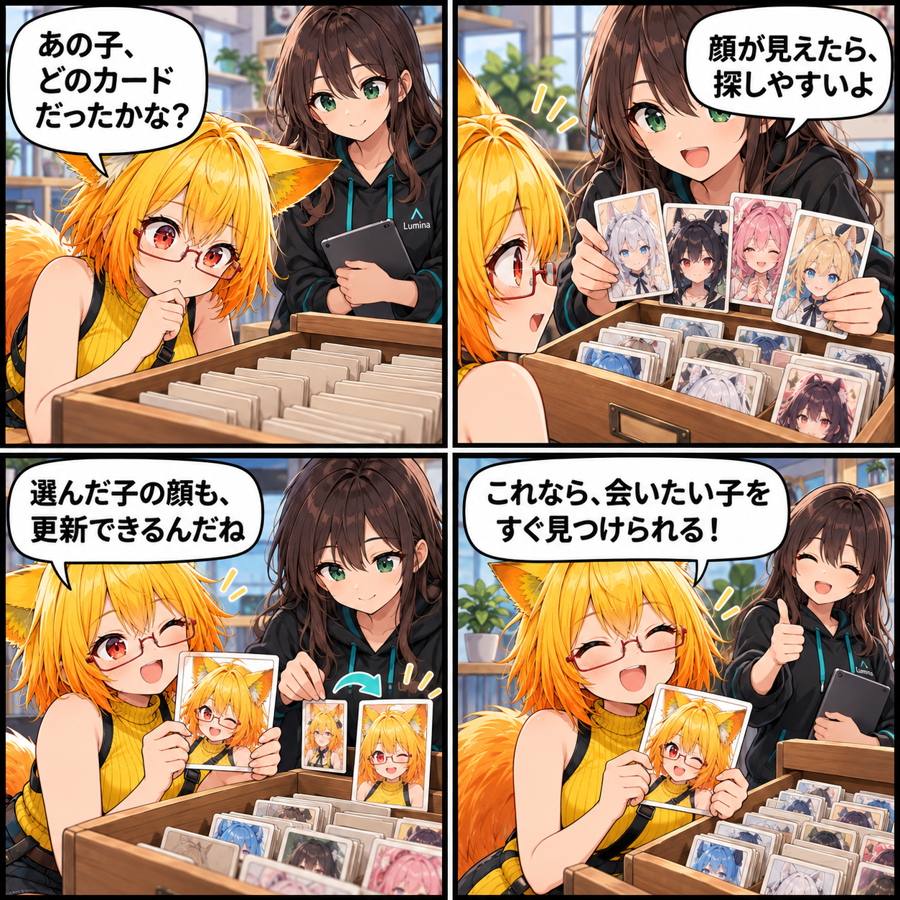

2026.10.17 / Development Log
閑話休題：並べて見つける、私の一人
VRASのアバターライブラリでは、VRMやVABの候補をサムネイルで見ながら選べます。今日は新機能の進捗ではなく、今ある選び方に目を向ける閑話休題です。
今回は feature-spotlight（閑話休題） です。集計期間は2026-10-16 03:00:00 JSTから2026-10-17 02:59:59 JST、参照ブランチはViewerの
main です。集計終了時点のHEADは e489bb2e2ced26e7c42dc7bc34e7664684774baf、期間内コミットは0件でした。未コミット差分は10月13〜14日作成と確認でき、当日の実績には含めません。集計終了時点で確認できる既存機能を紹介します。
先に顔が見えると、選びやすい
名前だけが並ぶリストでは、たくさんのアバターから目的の一人を探すのに少し時間がかかります。ライブラリのカードはサムネイルを表示するため、顔や雰囲気を手がかりに候補を見つけられます。
読み込み後の見た目も残せる
VRASでは、選択中のアバターのサムネイルを取り直して、ライブラリ表示を更新できます。画像の読み込みはキャッシュで扱われるため、カードを並べ直すときにも同じ画像を何度も抱え込まない設計です。
4コマの裏話
今回は、ライブラリを小さな肖像カードの引き出しに見立てました。探しているアバターの名前を思い出すより、まず顔を見つける——そんな選び方の気楽さを描いています。これは当日の新規実装ではなく、現行のVRASで確認できる機能紹介です。
まとめ
サムネイル付きのアバターライブラリは、候補が増えても「この一人」を見つけやすくするための入口です。
本日のひとこと
一覧に顔があると、再会は少し早くなります。